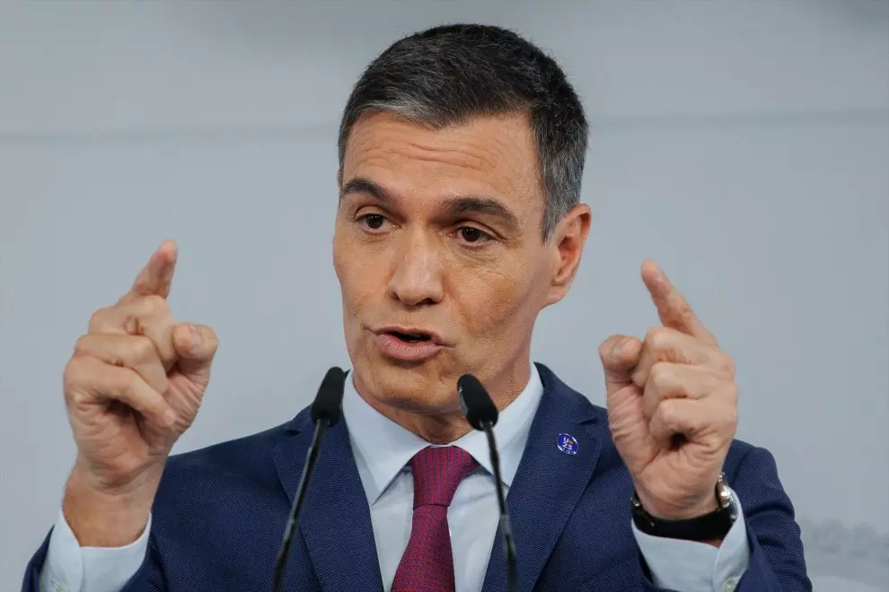

Inicio Economia Politica Sanidad
La Junta Electoral Central (JEC) ha multado con 2.200 euros a Pedro Sánchez por haber utilizado un acto institucional en Bruselas para criticar los pactos entre el PP y Vox y presumir de su gestión en plena campaña electoral del 23J. De este modo, el organismo sanciona que el Ejecutivo se valiese de los "medios públicos" de los que dispuso tras el Consejo Europeo de los pasados 29 y 30 de junio para hacer "electoralismo". La JEC acordó abrir este expediente a Sánchez el pasado mes de julio al aceptar una denuncia del PP, decisión que se adoptó con la discrepancia de tres vocales del organismo. El organismo arbitral concluye que Sánchez incurrió en la infracción tipificada en el artículo 153.1 de la Ley Electoral, por "la realización de manifestaciones con contenido valorativo y electoralista, aprovechando los medios públicos de que disponía". El contenido completo de su resolución se conocerá este viernes, pero de momento la JEC ha argumentado que Sánchez habría vulnerado la ley por utilizar un acto institucional para emitir "alusiones a realizaciones y logros resultantes de la gestión desarrollada por el Gobierno que preside", así como "apreciaciones valorativas que descalifican a otras formaciones políticas". Cuando Sánchez fue cuestionado por el acuerdo que acababan de cerrar el PP y Vox en Extremadura, el líder socialista descalificó los pactos postelectorales de ambos partidos en distintos puntos de España alertando de que podrían repetirse tras las elecciones del 23 de julio. Asimismo, el Ejecutivo presumió del reconocimiento en "privado" por parte de sus colegas europeos sobre su "extraordinario desempeño de la economía española en el ámbito del crecimiento, la creación de empleo y la evolución de la inflación". En su resolución del pasado mes de julio, la JEC señalaba que estas manifestaciones no podían "entenderse imprescindibles para la salvaguarda del interés público o para el correcto desenvolvimiento de un servicio público", como parecía alegar la defensa del presidente. Según el organismo arbitral, tales argumentos esgrimidos por Moncloa carecían de "consistencia", puesto que "la simple lectura" de las palabras de Sánchez en el acto no deja duda. La JEC aclaró que en recientes acuerdos el organismo ya había señalado la importancia de que "en España los altos cargos de las Administraciones Públicas están al servicio de todos los españoles y que, por consiguiente, está absolutamente prohibido el uso partidista de los recursos institucionales en beneficio de una determinada facción política". 